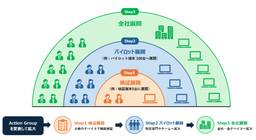
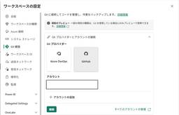
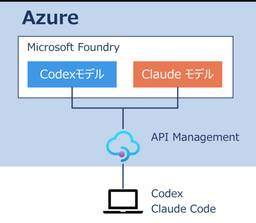

JBS Tech Blog
https://blog.jbs.co.jp/
JBS Tech Blogは、日本ビジネスシステムズ（JBS）の社員が分担して執筆を担当し、技術情報を発信しているブログです！Microsoft製品や生成AI関係の最新情報をはじめ、様々な製品やサービスの情報を幅広く公開しています。2022年3月より運用を開始し、営業日はほぼ毎日記事を公開しています。
フィード

【Microsoft Intune】構成プロファイルで電源接続時・バッテリー駆動時の画面ロック時間を分けて設定する方法
JBS Tech Blog
こんにちは。JBSの城下です。 Microsoft Intune（以下、Intune）でWindows端末を管理していると、以下のような要件をいただくことがあります。 「電源接続時は利便性を重視したい」 「バッテリー駆動時はセキュリティや省電力を重視したい」 本記事では、電源接続時とバッテリー駆動時で異なる画面ロック時間を実現する方法をご紹介します。 構成プロファイルとOS仕様の違いについて 今回のシナリオ 利用する設定 設定手順 実際の動作 電源接続時 バッテリー駆動時 まとめ 構成プロファイルとOS仕様の違いについて Intuneで画面ロックを構成する場合、構成プロファイル「Device …
13時間前
Microsoft Entra Connectサーバーのスウィングアップグレードの流れ
JBS Tech Blog
Microsoft Entra Connectサーバー（以降、MECサーバー）は、バージョンが古くなるとサポート対象外となり、同期が強制的に停止される可能性があるため、定期的に最新版へアップグレードする必要があります。 MECサーバーのアップグレードには複数の方法があります。今回は、各バージョンアップの方法について概要を紹介するとともに、筆者が実際に作業を行ったスウィングアップグレードを例に、新規サーバーのインストールから切り替え、既存サーバーのアンインストールの一連の流れや注意事項について説明します。 MECサーバーのアップグレードの手法 自動アップグレード インプレースアップグレード スウ…
17時間前

DP-900 合格体験記 1
1
JBS Tech Blog
データベース管理者の業務を担当している田中と申します。 DP-900（Microsoft Azure Data Fundamentals）に合格したので、これから受ける方向けに合格の体験記を残しておきます。 結論だけ書くと、学習時間は約15時間、教材はMicrosoft LearnとUdemyの教材を利用し、前提知識があれば無理なく準備ができる資格だと感じました。 Azureのデータベース関連のサービスにこれから触れる方や、DP-300の受験を視野に入れている方を主な対象として書いています。 この記事の構成は以下のとおりです。 DP-900の受験理由 資格の概要 学習時間 使用教材 Udemy…
3日前
FSMOの役割を転送する方法 1
JBS Tech Blog
FSMOとはActive Directory内での重要な処理を特定の1台のドメインコントローラーだけが担当する仕組みであり、5つの役割があります。 FSMOの役割を持ったドメインコントローラーを廃止するときなどは、別のドメインコントローラーにFSMOの役割を転送する必要があります。 FSMOの役割を転送するにはActive Directoryユーザーとコンピューター、Active Directoryドメインと信頼関係、Active Directoryスキーマを使うほか、コマンドを利用することもできます。 コマンドを利用することで複数の役割を一括で転送することができるという利点があります。 本記…
4日前

【Microsoft×生成AI連載】【Microsoft 365 companion apps】Peopleアプリ×Copilotで会議参加者の情報をタスクバーから取得 1
JBS Tech Blog
タスクバーに常駐するMicrosoft 365コンパニオンアプリで、会議参加者情報をリアルタイムに確認。Copilot連携で自然言語の質問に対応。
4日前
Microsoft Foundry Skills API と Toolbox MCP Skills で Skill を再利用可能な部品として管理する 1
JBS Tech Blog
前回の記事では、Microsoft Agent Framework（MAF）で Skill を持つ Agent を作成し、その Agent を Microsoft Foundry Hosted Agent として公開し、公開済みの Hosted Agent を MAF から再利用する流れを紹介しました。本記事では、その発展構成として、Microsoft Foundry Skills API と Foundry Toolbox MCP endpoint を使い、Skill を再利用可能な部品として管理する方法を扱います。この構成では、Skill を Microsoft Foundry proje…
4日前

【Tanium】Action Groupとは？安全な運用を実現するための設計ポイントを解説 1
JBS Tech Blog
Taniumでは、多数のエンドポイントに対してアプリケーション配布やパッチ適用、スクリプト実行などの管理操作を実行できます。Taniumでは、これらの管理操作を総称して「アクション」と呼びます。 アクションは運用業務を効率化するうえで非常に便利な機能ですが、誤ったエンドポイントを対象として実行した場合、業務停止やシステム障害につながる可能性があります。特にTaniumは、数千台から数万台規模のエンドポイントに対して一斉にアクションを実行できるため、設定ミスによる影響も大規模になりがちです。 こうしたリスクを抑制するための仕組みがAction Groupです。 Action Groupを利用する…
5日前

Microsoft Fabric Git統合を利用した開発環境から本番環境への反映方法 1
JBS Tech Blog
本記事では、Microsoft FabricのGit統合機能を利用し、FabricアイテムをGitHubで管理する方法を紹介します。 開発用ワークスペースで作成したアイテムをGitへ反映し、本番用ワークスペースへ展開するまでの流れを確認します。 なお、本記事はMicrosoft Fabricのワークスペースやアイテムの基本的な操作、およびGit／GitHubに関する基礎知識をお持ちの方を対象としています。 Microsoft Fabric Git統合とは 本記事のゴール 前提条件 STEP1 Personal Access Tokenの発行 STEP2 GitHubリポジトリとワークスペースの…
6日前
【Microsoft×生成AI連載】【Microsoft Fabric】DataAgentに追加された新機能を説明してみた
1
JBS Tech Blog
Microsoft Fabric の データ エージェントに、取得したデータを Python で分析できる コード インタープリター機能が追加されました。 これまでのデータ エージェントは、接続したデータ ソースへ自然言語で質問し、SQL、DAX、KQL、GQL などを使ってデータを取得することが中心でした。コード インタープリターを追加すると、取得結果を安全なサンドボックス Python 環境へ渡し、計算、統計分析、相関分析、予測、グラフ作成まで自然言語で依頼できるようになります。 本記事では、Fabric データ エージェントのコード インタープリターについて、できることや実際の使い方を交…
6日前

高可用性・フォールトトレラント仮想化ソフトウェア【everRun】仮想マシン作成手順 1
JBS Tech Blog
前回の記事では、Penguin Solutions（旧 Stratus Technologies）が提供する高可用性・フォールトトレラント仮想化ソフトウェア「everRun」を取り上げました。そこでは概要や主要コンポーネント、障害発生時の動作について整理をしています。 今回は、実際にeverRun環境へ仮想マシンを作成する手順を紹介します。 ※本記事では各ノードにeverRunがインストール済であることを前提としています。 これからeverRunを学ぶ方の参考になれば幸いです。 仮想マシン作成前に押さえておきたい知識 eAC(everRun Availability Console) 保護モー…
7日前
Terraform で New Relic の AWS 監視を構築してみた 1
JBS Tech Blog
Terraformで管理するAWS環境にNew Relicを活用して監視機能を追加。CloudWatch Metric Streamsを効果的に使い、リアルタイムでリソースの監視を実現。
7日前

API Management 経由で Codex を利用するための設定のポイント- Azure を活用したコーディングエージェント基盤 連載第4回 1
JBS Tech Blog
Microsoft Foundry にデプロイした CodexモデルをAPI Management 経由で理利用するための API の設定ポイントを紹介します。Codex CLI の設定もあわせて紹介します。
8日前

Exchange Online における一般ユーザーの配布グループ作成を制御する方法 1
JBS Tech Blog
Exchange Online の配布グループでは、グループ所有者へメンバー管理を委任する運用を行うことができます。 運用によっては、以下のような要件が発生することがあります。 特定の担当者のみが配布グループを作成できるようにしたい 配布グループのメンバー管理は各グループ所有者に委任したい 一般ユーザーによる配布グループ作成は制御したい 今回、上記要件を満たす方法を検討する中で、Exchange Online の MyDistributionGroups が配布グループの作成にどのような影響を与えるのかを調査しました。 本記事では、既定設定での動作、発生した事象、その原因および解決方法について…
8日前

Microsoft Edge のInternet ExplorerモードのサイトリストをグループポリシーからIntuneへ移行する方法
JBS Tech Blog
Microsoft Edge（以降、Edge）のInternet Explorer（IE）モードを利用している環境では、グループポリシーオブジェクト（以降、GPO）とEnterprise Mode Site List（XML）によりサイトリストを管理しているケースがあります。 本記事では、既存のXMLを Microsoft 365管理センター（以降、M365管理センター）へインポートし、Microsoft Intune（以降、Intune）を利用して展開する手順を紹介します。 事前準備 設定方法 M365管理センターの設定 Intuneの設定 終わりに 事前準備 GPOで利用している既存のXM…
11日前
MarpでMarkdownからスライドを作成しよう
JBS Tech Blog
MarpはMarkdownでスライドを生成することができます。テキストベースなのでGit管理が容易で生成AIとの組み合わせにも向いています。 本記事ではMarpの特徴と基本的な使い方を紹介したいと思います。 対象読者 動作確認環境 Marpとは Marpを使うメリット バージョン管理のしやすさ デザインと構成の分離 生成AIとの親和性 事前準備 クイックスタート 便利な機能の紹介 全スライド用の設定 テーマの設定 まとめ 参考ページ 対象読者 Markdownで資料を作成したい方 スライド資料作成でGit管理や生成AIを活用したい方 動作確認環境 Visual Studio Code (Ver…
11日前
【Microsoft×生成AI連載】Copilotノートブックのマインドマップ機能を使ってみた
JBS Tech Blog
プロジェクト資料や議事録、提案書などの複数のドキュメントをCopilotノートブックに集約していると、「どの情報が関連しているのか分かりにくい」「重要なテーマを整理したい」「情報の全体像を視覚的に把握したい」と感じることがあるのではないでしょうか。Copilotノートブックには、このような課題を解決する機能として「マインドマップ」機能が提供されています。ノートブック内の情報をCopilotが自動で分析し、主要なテーマやトピック、それらの関係性を視覚的に整理して表示してくれるため、大量の情報を効率的に理解できます。本記事では、Copilot ノートブックのマインドマップ機能の概要や利用方法、活用シーンについて紹介します。
11日前
Microsoft Entra IDにおけるPIM利用による特権ロール管理(ロール設定編)
JBS Tech Blog
Microsoft Entra IDのサービスであるPrivileged Identity Management(以下、PIM)は、組織内の重要なリソースへのアクセスを管理、制御、監視する際に便利な機能です。 PIM利用におけるロール運用について全2回に分けてご紹介いたします。 今回は、PIMロールの設定編となります。 Privileged Identity Managementについて 通常のロール利用とPIMによるロール利用時の運用比較 ロールの設定 おわりに Privileged Identity Managementについて PIMは、組織内の重要なリソースに対する特権アクセスを管理・…
12日前
高可用性・フォールトトレラント仮想化ソフトウェア「everRun」の基本知識
JBS Tech Blog
Penguin Solutions（旧 Stratus Technologies）が提供する高可用性・フォールトトレラント仮想化ソフトウェア「everRun」に触れる機会がありました。 これまで筆者は「everRun」を扱った経験がなく、製品概要などについても理解できていませんでした。 本記事では、「everRun」の概要や主要コンポーネントについて整理したため、そのアウトプットとして投稿します。 これからeverRunを扱う方や、高可用性基盤について興味がある方の参考になれば幸いです。 everRunとは everRunの主要コンポーネント eAC（everRun Availability …
12日前
Veeam Backup & Replication Ver13構成情報のバックアップ
JBS Tech Blog
Veeam Backup & Replicationでは、バックアップデータだけでなく、ジョブ設定やリポジトリ設定、認証情報などの構成情報も重要な資産となります。サーバ障害や設定変更ミスに備え、定期的に構成情報バックアップを取得しておくことで迅速な復旧が可能となります。 本記事では、Veeam Backup & Replicationの構成情報(バックアップジョブ設定、インフラストラクチャ設定、Veeam内部データベース、資格情報等)を設定ファイルとしてバックアップする方法について解説します。 なお、本記事では構成情報の「バックアップ方法」に焦点を当てて紹介します。今後公開予定の記事では、取得…
13日前
Microsoft 365 Copilot で Anthropic の Claude が選べるようになりました — 選び方と得意なこと
JBS Tech Blog
Microsoft 365 Copilot で Anthropic の Claude を選べるようになりました。モデル選択メニューの見方と、Claude の選び方・得意な使い方を、初心者向けにやさしく解説します
13日前
【Microsoft×生成AI連載】【Copilot Notebook】PowerShellスクリプトをナレッジに追加して運用マニュアルを自動生成してみた
JBS Tech Blog
PowerShell スクリプトは業務の運用自動化に欠かせない一方で、その処理内容や実行手順をドキュメント化する作業には手間がかかります。特に複数のスクリプトファイルで構成される処理では、全体像を整理して運用マニュアルとしてまとめることは容易ではありません。 しかし、Copilot Notebook のナレッジ（参照）を活用すると、複数の PowerShell スクリプトをまとめて解析し、処理内容を構造化された運用マニュアルとして自動生成できます。 本記事では、PowerShell スクリプトを Copilot Notebook のナレッジとして登録し、運用マニュアルを自動生成する方法を紹介し…
13日前
Microsoft Purview アイテム保持ポリシーの概要と適用方法
JBS Tech Blog
業界の規制やセキュリティインシデント発生時のリスク軽減のため、組織では以下のようなコンテンツ管理が求められる場合があります。 契約書を7年間保持させる 特定のドキュメントは5年後に削除する Microsoft Purviewの保持設定を利用することで、これらの要件の実現が可能です。 本記事では、アイテム保持ポリシーの概要と適用方法についてご紹介します。 概要 アイテム保持ポリシーの構成方法と動作確認 構成方法 動作確認 さいごに 概要 アイテム保持ポリシーとは、Microsoft 365環境内のデータ（メールやドキュメント等）を一定期間保持または削除するルールを定義するポリシーです。 アイテム…
13日前
Tanium を使用して Microsoft Defender for Endpoint のオンボーディングを実施する
JBS Tech Blog
Microsoft Defender for Endpoint（以下 MDE）を利用するためには、対象端末をMDEに登録する「オンボーディング」という作業が必要です。Taniumを利用すると、このオンボーディング作業を複数の端末に対して一括で実施できます。本記事では、Taniumを利用してMDEをオンボーディングする手順について紹介します。 概要 オンボード用スクリプトファイルのダウンロード Tanium オンボードパッケージのインポート オンボードパッケージの Deploy おわりに 概要 MDE のオンボーディングは、Microsoft Defender ポータルから提供される専用のオンボ…
14日前
アダプティブ カード デザイナーの使い方：その8 パーツの紹介（Input.Time）
JBS Tech Blog
シリーズ第8回では、アダプティブカードデザイナーの『Input.Time』を使った時刻選択方法をご紹介。
14日前
Intune における複数構成プロファイルの並行展開設計と実践
JBS Tech Blog
Microsoft Intune では、ユーザーベース・デバイスベースの2軸で構成プロファイルを割り当てることができ、目的の異なる複数のポリシーを組み合わせて運用するケースは少なくありません。 構成プロファイルを整理する中で「割り当て対象（ユーザー/デバイス）が異なる2種の構成プロファイルを同一端末に並行展開した場合、両方の設定が同時に適用されるのか？」という疑問を持ちました。 本記事では、異なる2種類の構成プロファイルを 並行展開し、両設定が同時に適用されるかを検証した結果と、適用状態の確認手順を紹介します。 前提条件と対象 検証の目的 検証手順と結果 構成プロファイルA（ユーザーベース：パ…
14日前
Posh-ACMEによる証明書の自動更新～DNS-01チャレンジ方式～その2
JBS Tech Blog
本記事では、Posh-ACMEとAzure DNSを組み合わせ、DNS-01チャレンジ方式によるSSL/TLS証明書の取得および自動更新を構成する手順をまとめます。
15日前
Figma MCP × Code Connect × GitHub Copilot で実現するデザインからのコード生成
JBS Tech Blog
「Figma のデザインからの実装をもっと効率化したい」「整備した共通コンポーネントを、AI によるコード生成でも活用したい」といった課題は、デザインシステムを運用するチームに共通しています。 Figma MCP(Model Context Protocol)と Code Connect、そして GitHub Copilot を組み合わせると、Figma のデザインから共通コンポーネントを優先使用したコードを直接生成できるようになります。 React とデザインシステムでフロントエンド開発をしているチームで、Figma デザインからの実装を効率化したい方、共通コンポーネントの利用をさらに徹底し…
15日前
Teams Phoneでの「誰が・いつ・どの番号を付け外ししたか」を監査ログから追跡する
JBS Tech Blog
Teams Phoneでの「誰が・いつ・どの番号を付け外ししたか」を監査ログから追跡しCSVへ一覧化して出力します。
15日前